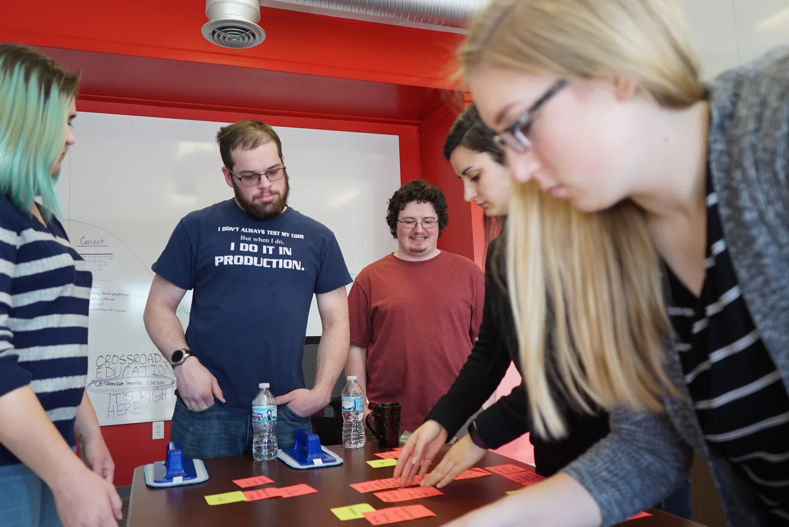
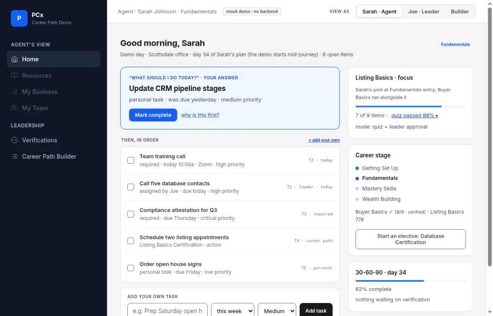

01 / TEAM UX
Crossroads Education
Research, structure and interface work for Element and Nexus.
Inside the work
I work on research, structure and interaction for product and web interfaces.
Phoenix, Arizona
01 / TEAM UX
Research, structure and interface work for Element and Nexus.
Inside the work
02 / PRODUCT PROTOTYPE
A clearer daily path through a real-estate training platform.
See the decisions
How I work
Interviews, observation and card sorting help me understand how people think about the problem.
I work through information architecture, user flows and prototypes so the idea can be inspected.
Clear hierarchy, predictable interactions and purposeful motion make a screen easier to follow.
A little context
My background includes eight years of graphic design. At Crossroads Education, I worked on UX research and interfaces for Element and Nexus. Through Lofty Labz, I work across design and automation.
I work with Figma, Adobe tools and interactive prototypes. When code helps make an idea testable, I use AI-assisted development and keep the limits of the prototype visible.
Contact
If you’re building a product or putting a design team together, I’d like to hear about it.